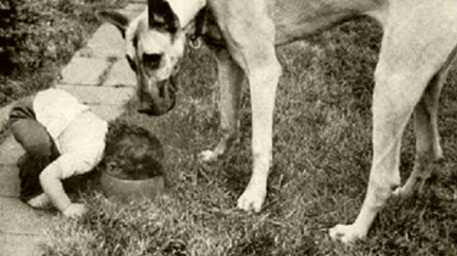

Documenting Microservices
Why and how to change to document them efficiently
Created by Łukasz Górnicki / @derberq
Working on YaaS in SAP Hybris
Microservices
Architecture
- You build them from scrach, otherwise you're doing it wrong,
- Designed for cloud,
- In most cases they talk with each other through REST API of HTTP protocol.
Developer's challanges become yours
- Services are independent, but documentent in one portal,
- There are many of them, more are comming, teams are extending,
- Continuously released and deployed.
New Year's resolution for 2017
become a technical writer for microservices.
Microservices main principle
"you build it you run it"
You want to become a TW for microservices because:
- You always have a ready playground and production environment when working on documentation,
- You really become "technical" writer, you can quickly learn things,
- Continuously release = continuous feedback = continuous improvement.
Now imagine how your current organization would handle what I just said
Solution!
- Organizational: Remove/Cancel/Destroy current Documentation team/department
- Technical: Make documentation creation flow an integral part of the whole service development cycle
Organizational change
- Technical writers real dev teams members with the same manager as other team members,
- New scrum team with some cool name (Flyspeck?) that consists of documentation arch, trainers, language reviewers.
- New scrum team with some cool name (Wookiees?) that consists of documentation arch, developers and works on documentation solution.
Psyhological change
- "don’t say Bugs but Defects"
- "don’t say What went wrong but What we can do better"
Devs treat writers as a team member

Writers experience different type of engagement
No more excuses
- "We need documentation? Talk to docu team, they should give us TW that will do it for us"
- "Documentation? We failed cause Docu team moved one of our TWs to another project"
- "New feature? Docu team has to decide what to do with it"
Now they say
- "We can’t release it without documentation. We need to document and talk to Flyspeck to get a language review"
- "We have something new that doesn’t fit the current structure. We need to talk with Flyspecks on what to do, and then we have to do it"
- "I don't like how it is formatted in the UI. We need to talk to Wookiees to improve it"
Technical change
- Whole docu with the service source code
- Documentation and release notes kept together
- Central registry of each documentation topic
- Portal template based on static site generator
- Continuous integration plans
Thanks!
YaaS https://yaas.io
This presentation: http://derberg.github.io/documenting-microservices
GitHub: derberg
Twitter: @derberq
DocPad: https://docpad.org/
reveal.js: https://github.com/hakimel/reveal.js